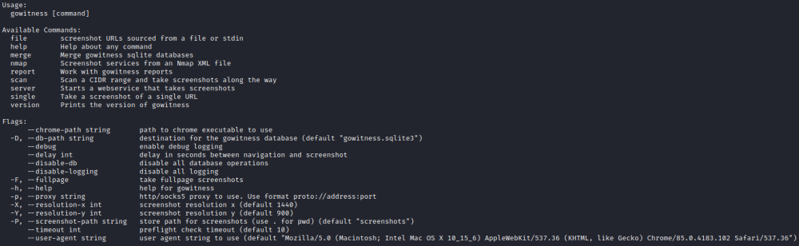
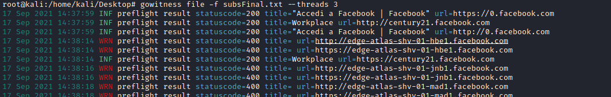
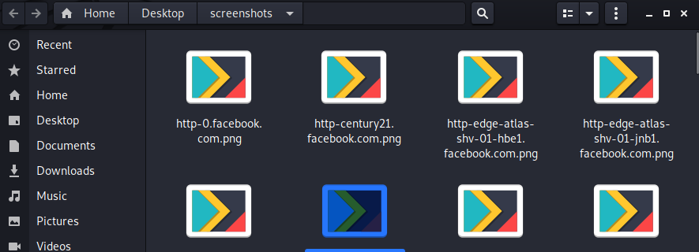

GoWitness
GITHUB:
https://github.com/sensepost/gowitnessIt can take a
screenshot of all the pages of the domains in a list/file, put them in a folder.
From a screenshot we can
check visually:
◇ if a page is using an old architecture
◇ something that simply stands out compared to
other websites
◇ ...
Installation:
https://github.com/sensepost/gowitness/wiki/Installation1.
Install dependencies
2. Install gowitness
go get -u github.com/sensepost/gowitness
HELPUsage
gowitness file -f subsFinal.txt --threads 3
the "screenshots" folder containing the results will be created in the folder from where we
have run the script
 